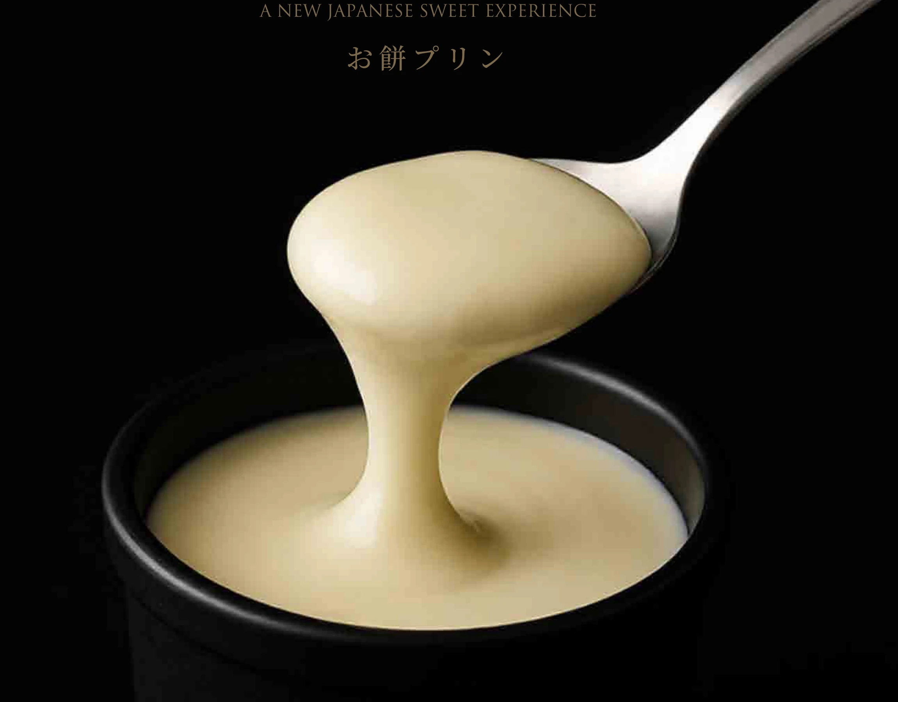
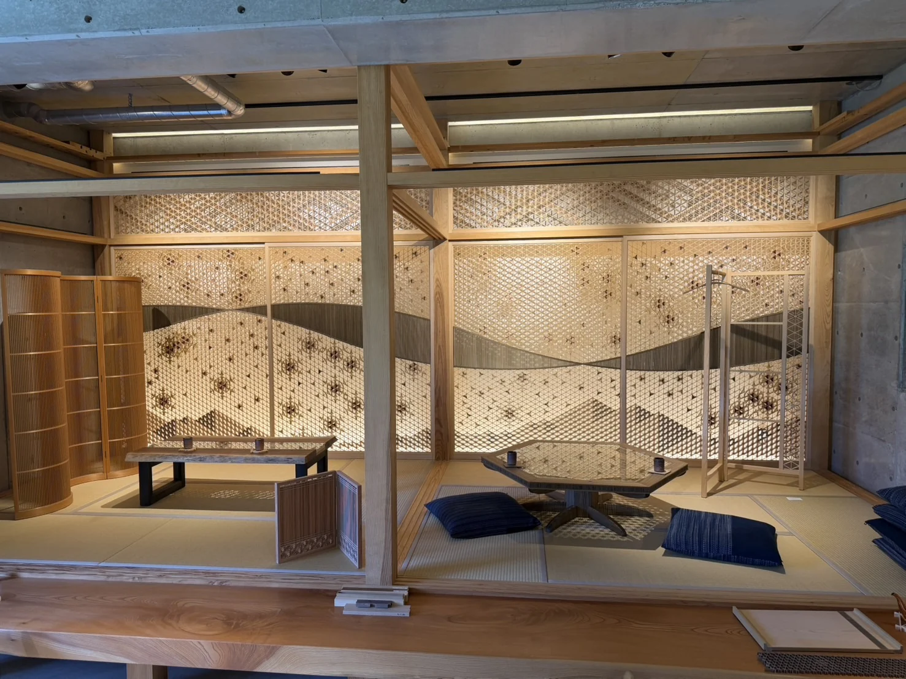

事業内容Services
SERVICES — WHAT WE DO
Business overview
単なる輸出だけでなく、
現地の暮らしに合わせた
プレミアムな価値を。
Not just export — premium value, shaped to how America actually lives.
私たちの事業は「日米間における高品質プロダクトの輸出入及び現地での販売・フランチャイズ展開」です。ただし、コンテナに載せて送り出すところで終わりにはしません。現地のライフスタイルに合わせてどう見せ、どう売り、どう組み上げるか。そこまで含めて設計するのが私たちの仕事です。 On paper, our business is the import and export of premium products between Japan and the United States, together with local sales and franchise development. In practice, our work does not stop at the container. How a product is presented, sold and installed on American soil is part of the same design problem.
日本の高い技術力——妥協のない責任感のある仕事（品質・納期・アイデア・価格）。そして現地で感じた問題点やニーズに対して2倍、3倍のスピードで対応できること。この二つが、私たちのコアです。 Two things sit at the core: serious Japanese craft — quality, deadlines, ideas and price, without compromise — and the ability to respond to what we find in the field at two or three times the usual speed.

米国の飲食店への
卸売
Wholesale to restaurants in the US
日本で製造したスイーツを、アメリカの飲食店へ卸す事業です。代表商品は「お餅プリン」。ほかにマンゴープリンなど、日本のスイーツ各種を扱います。日本食をメインに扱う現地ディーラー網を通じて、レストランのデザートメニューに載せるところまでを担います。 We wholesale Japanese-made confectionery to restaurants across the United States. Our lead product is the Omochi Pudding, alongside mango pudding and other Japanese sweets. Working through the established Japanese-food distribution network, we take it all the way onto the dessert menu.
現地で売れる形にするところまでが、私たちの担当範囲です。試作品を携えて渡米し、あらゆる人種の方に試食していただきアンケートを実施する。その結果を根拠として提案し、採用につなげる。日本国内で完結する商品開発とは、進め方から違います。 Our remit runs all the way to the point of sale. We carry prototypes to the US ourselves, run tastings across the full range of American palates, and use the results as the basis of the proposal. It is a different process from developing a product entirely inside Japan.
- 日本の食品メーカーとの商品開発・試作Product development and prototyping with Japanese manufacturers
- 現地でのテストマーケティング・試食アンケートIn-market testing and consumer tasting surveys
- FDA等の規制対応と輸出手配FDA clearance and export handling
- 日本食メインのディーラー網を通じた飲食店への卸展開Wholesale into restaurants through Japanese-food distributors
- POP UPを含む、店頭での導入支援In-store launch support, including pop-ups

マスターフランチャイズ・
米国本部機能
Master franchise and US headquarters
日本の飲食企業がアメリカへ出店する際、現地の本部機能そのものをお引き受けします。マスターフランチャイジーとして、加盟店の開発から店舗運営、ブランド管理までを私たちが担う形です。 When a Japanese restaurant company enters the United States, we can take on the headquarters function itself. As master franchisee, we handle franchise development, store operations and brand management on the brand's behalf.
現地法人を立ち上げ、人を採用し、店舗を回す。この一連を日本から遠隔で行うのは容易ではありません。12年の現地経験と人脈を持つ私たちが本部として立つことで、ブランドは「出店の実務」ではなく「ブランドそのもの」に集中できます。 Setting up an entity, hiring people, keeping stores running — doing all of that remotely from Japan is hard. With us standing as the local headquarters, a brand can concentrate on being a brand rather than on the mechanics of opening.
- マスターフランチャイジーとしての米国展開US rollout as master franchisee
- 加盟店開発・エリア戦略の設計Franchisee development and territory strategy
- 店舗運営、スタッフの採用・教育Store operations, hiring and training
- ブランド基準の管理と、現地に合わせた調整Brand standards management and local adaptation
- 食材・資材のサプライチェーン構築Supply chain for ingredients and materials

建築資材の輸出と
現地施工
Exporting building materials, fitting out on site
内装・外装の建築資材を日本から輸出し、現地の店舗に落とし込んで施工します。言い換えれば、カウンター、造作家具、格子や建具といったミルワークを、日本製のままアメリカの店舗にお届けできるということです。図面をもとに日本の工場で製作した部材をコンテナで送り、現地では組み立てを中心とした短い工期の工事に切り替えます。 Interior and exterior building materials exported from Japan and fitted out on site. Put another way: the millwork itself — counters, joinery, screens and fittings — arrives in the American store made in Japan. Components are produced to drawing in Japanese workshops, shipped by container, and put together on site as assembly rather than fabrication.
この方式の強みは、数字にはっきり出ます。輸送費を含めても現地で製造するより約15%安く仕上がり、納期は約4分の1に短縮できます。米国の工事は納期が読めず、遅れはそのまま空家賃とオープン遅延の損失になります。日本のものづくりが当たり前に守ってきた「決めた日に納める」という一点が、そのまま金額の差になって表れます。この仕組みは1年半かけて整えてきました。 The advantage shows up in the numbers: around 15% cheaper than building locally even with freight included, and roughly a quarter of the lead time. US construction schedules are hard to predict, and every week of slippage is rent paid on a closed store. The Japanese habit of simply meeting the date turns directly into money. It took us a year and a half to build this into a repeatable process.
- 日本製ミルワーク（カウンター・造作家具・格子・建具）の製作Japanese-made millwork — counters, joinery, screens and fittings
- 内装・外装資材、什器の製作Interior and exterior materials and fixtures
- 施工図・単品図の作成と、出荷前の品質確認Shop and component drawings, with inspection before shipping
- コンテナ輸出・通関・現地搬入Container export, customs and delivery to site
- 現地での組み立て・施工管理On-site assembly and construction management

店舗デザイン
及び施工
Restaurant design and build
既に数件の実績がありますが、和風または和洋折衷の店舗デザインのご依頼が数多くあります。お客様のご要望を伺いながら、あらゆる角度のテイストをご提案し、満足していただけるデザイン提案を行います。施工部分もあわせてお引き受けすることで、意匠と現場の乖離を防ぎます。 Requests for Japanese and Japanese-Western interiors keep arriving, and we have several completed projects behind us. We listen first, propose from every angle we can, and take on the construction as well — which is what keeps the finished room faithful to the drawing.
- 和風・和洋折衷を軸とした店舗デザイン提案Interior design centred on Japanese and Japanese-Western styles
- 施工図・単品図の作成Shop drawings and component drawings
- 日本の木工所での家具・部材製造と品質管理Furniture and component manufacture in Japanese workshops, under our own QC
- 現地での組み立て・施工管理On-site assembly and construction management in the US
トータル
コンサルティング
Total consulting for US market entry
これまでもアメリカ進出を希望する企業へのサポートを行ってまいりましたが、不動産・ゼネコン・食材業者全般・弁護士・会計士・銀行・VISA関連などあらゆるサポートが可能な経験と知識がありますので、本格的にお受けしていきます。 We have supported companies entering the US market for years. Real estate, general contractors, food suppliers, attorneys, accountants, banking, visas — the experience and the contacts are in place, and we are now taking this on as a formal service line.
- 物件探索・不動産契約のサポートSite search and real-estate negotiation support
- ゼネコン・食材業者などの現地パートナー紹介Introductions to contractors, food suppliers and other local partners
- 弁護士・会計士・銀行との連携Coordination with attorneys, accountants and banks
- VISA関連の手続きサポートVisa process support
日米間における
高品質プロダクトの輸出入
Import and export of premium products
日本製の家具・木工材料（ミルワーク）から食品まで、米国市場に通用する品質のプロダクトを輸出します。円安環境を活かし、輸出送料を含めても現地手配よりコストメリットが出ることを、実際の試算で確認しながら進めます。 From furniture and architectural millwork to food products — Japanese goods at a standard the American market recognises. With the current exchange rate, our costings frequently come in below local sourcing even once freight is included, and we verify that case by case before committing.
- 家具・木工材料（ミルワーク）のコンテナ輸出Container export of furniture and architectural millwork
- 食品の輸出と、FDA等の規制対応Food export, including FDA and quarantine clearance
- 米国から日本への輸入Import into Japan from the United States
- 物流パートナーと連携した輸送・通関の管理Freight and customs management with established logistics partners
How a project runs
構想から、現地の
オープンまで。
From first conversation to opening day.
案件によって順序も範囲も変わりますが、標準的にはこのように進みます。どの段階からでもご相談いただけます。 Scope and sequence vary by project, but this is the standard shape of the work. You can join us at any stage.
-
STEP 01
ヒアリングと現地ニーズの確認Brief and field check
何を、どの市場に、どう届けたいのか。あわせて現地で本当に求められているかを、私たちの目と人脈で確認します。What you want to deliver, to which market, and in what form — checked against what the field is actually asking for, using our own eyes and contacts.
-
STEP 02
試作・サンプル製作Prototyping
日本の製造パートナーと組み、短いサイクルで試作します。スピードそのものが提案の価値になります。Built with our Japanese manufacturing partners on a short cycle. The speed itself is part of the proposal.
-
STEP 03
現地でのテスト・試食In-market testing
試作品を携えて渡米し、実際に食べていただく・触れていただく。アンケート結果を数字にして持ち帰ります。We take the prototype to the US and put it in people's hands. The survey results come back as numbers, not impressions.
-
STEP 04
規制対応・図面作成Regulatory clearance and drawings
食品であればFDA等の基準対応。内装であれば施工図・単品図を作成します。ここを丁寧にやるほど、現地が楽になります。FDA and quarantine work for food; shop and component drawings for interiors. Every hour spent here saves several on site.
-
STEP 05
日本での製造と品質管理Manufacture and QC in Japan
日本の木工所・製造メーカーで生産し、出荷前に私たちが品質を確認します。Produced by Japanese workshops and manufacturers, with our own inspection before anything ships.
-
STEP 06
コンテナ輸出・通関Container export and customs
物流パートナーと連携し、コンテナで輸出します。輸送中のトラブルを想定した梱包・積み付けまで含めて設計します。Shipped by container with our logistics partners, packed and stowed on the assumption that things go wrong in transit.
-
STEP 07
現地納品・組み立て／販売開始Delivery, assembly, launch
物件現地に到着したら、施工図・単品図をもとにプラモデルのように簡易に組み上げます。食品であれば、店頭導入と販売がここから始まります。Once it lands, the millwork goes together on site from the drawings — closer to assembly than to construction. For food, this is where the shelf life of the project really begins.
-
STEP 08
継続的な改善と展開Iteration and rollout
2店舗目、3店舗目へ。あるいは他州・他チャネルへ。実績を積むほど、次の案件は速く安くなります。On to the second store, the third, other states, other channels. Each completed project makes the next one faster and cheaper.
Why it works
コストを、どこで下げるか。Where the savings actually come from.
米国現地のレストラン工事関連は異常な程に価格が高騰しており、また日本と大きく違うのは納期が約3倍〜6倍もかかってしまうことです。問題点の全てがコストとして跳ね返ります。私たちの構成は、その連鎖を断ち切ることを狙っています。 Restaurant construction in the US has become extraordinarily expensive, and — unlike Japan — lead times run roughly three to six times longer. Every one of those problems eventually shows up as cost. Our model is built to break that chain.
-
VALUE 01
家具・材料の製造コスト削減Lower manufacturing cost
ミルワーク部分を日本の木工所で製造することで、現地手配より製造コストを抑えられます。Manufacturing the millwork in Japanese workshops comes in below local fabrication.
-
VALUE 02
納期短縮による人件費削減Shorter build, lower labour
現地では組み立て中心の作業になるため工期が縮み、そのぶん人件費が下がります。On-site work becomes assembly rather than fabrication, so the programme — and the labour bill — shrinks.
-
VALUE 03
空家賃の発生を削減Less dead rent
早くオープンできることで、売上の立たない期間の家賃を圧縮できます。Opening sooner compresses the months of rent paid before a single sale.
-
VALUE 04
売上収入の早期実現Revenue, sooner
オープンが前倒しになれば、その分だけ早く売上が立ち始めます。An earlier opening date is an earlier first day of revenue.
円安環境のため、日本からの輸出送料を含めても現地手配よりコストメリットが出ることが試算結果で明らかになっています。実際の条件は案件ごとに異なりますので、個別にお見積りいたします。 With the current exchange rate, our costings have shown a cost advantage over local sourcing even after freight from Japan. Conditions differ from project to project, so we quote each one individually.

Get in touch
試算だけでも、承ります。 Happy to start with just the numbers.
「日本で作って送ったら、いくらになるのか」。その一点だけでもお答えできます。図面や仕様がなくても構いません。 "What would it cost to make this in Japan and ship it?" We can answer that much on its own — drawings not required.